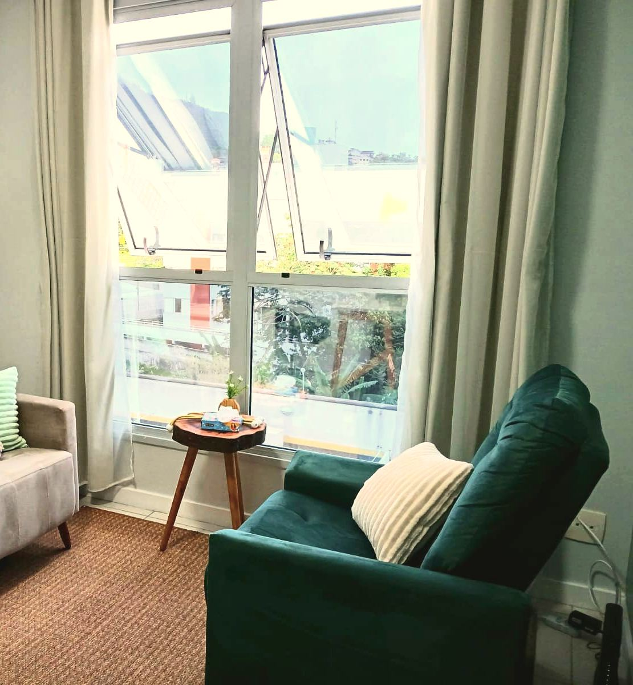
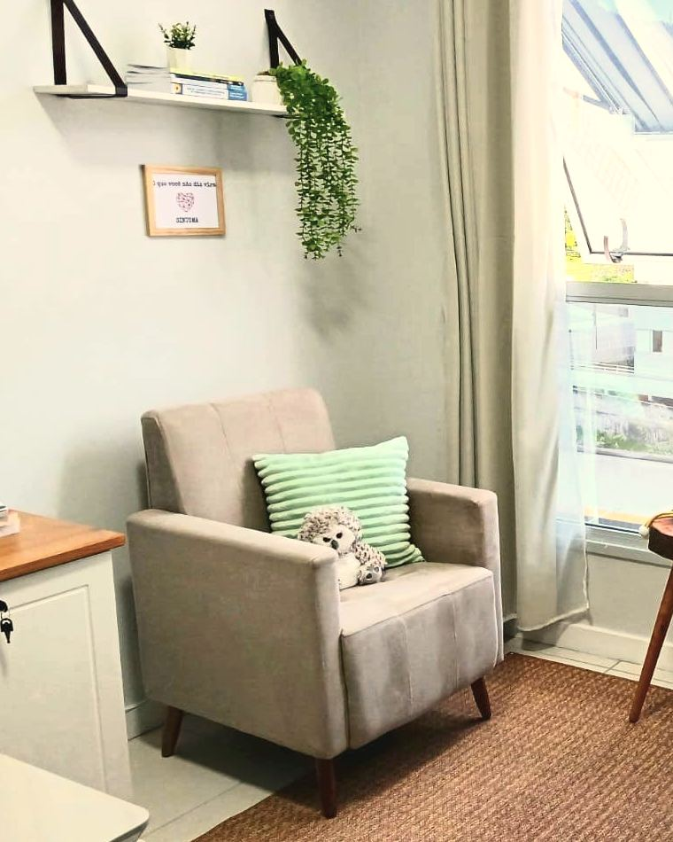
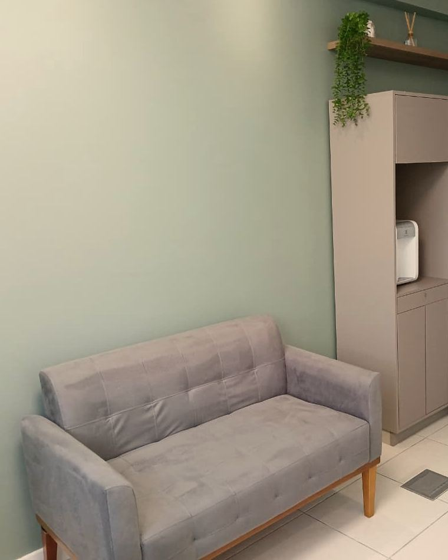
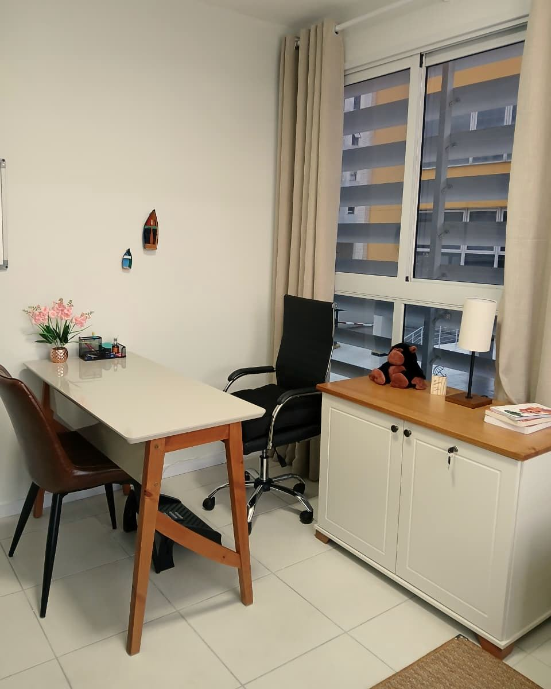
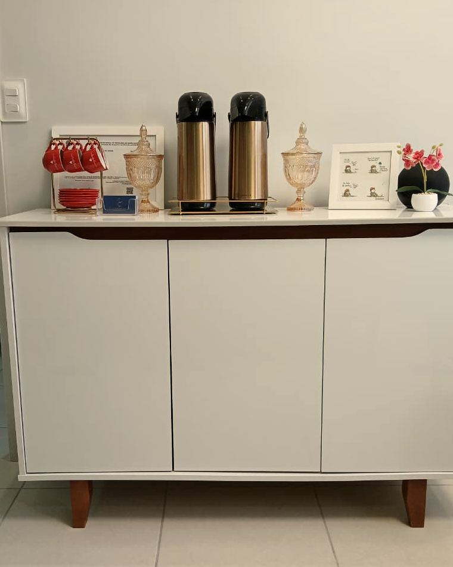

Elissandra Melo · Psicóloga · Psicoterapia TCC · Trindade, Florianópolis
toque na frase para ver como a TCC olha para isso
Psicoterapia individual com Terapia Cognitivo-Comportamental, no consultório da Trindade e on-line.
Psicóloga Elissandra de Oliveira Melo · CRP 12/26857

- CRP 12/26857
- Psicoterapia TCC
- Torre Flora · Trindade
- Presencial e on-line
Terapia para entender o que você pensa, sente e faz — com método, passo a passo, no seu ritmo.
Sobre a Elissandra
Uma terapia estruturada, feita com escuta.
Sou a Elissandra Melo, psicóloga clínica. Trabalho com a Terapia Cognitivo-Comportamental, a TCC: uma abordagem que busca entender a relação entre o que você pensa, o que sente e o que faz, e construir com você formas novas de lidar com o dia a dia.
Acredito que você não precisa estar no seu pior momento para pedir ajuda. Terapia também é prevenção, autocuidado e autoconhecimento.
Atendo no meu consultório na Torre Flora, na Trindade, e também on-line.
Psicóloga Elissandra de Oliveira Melo · CRP 12/26857
Ver como funciona →Com o que posso ajudar
O que pode trazer você à terapia.
Alguns dos temas com que trabalho. Nenhum deles precisa de um nome ou de um diagnóstico para ser levado à sessão, e sinais como esses não significam, necessariamente, que exista um transtorno.
-
01
Ansiedade
Preocupação que não desliga, medo do que pode dar errado, pensamento acelerado.
AnsiedadePensamentos
-
02
Cansaço, irritação e sono
Cansaço constante, irritabilidade, dificuldade para dormir, perda de interesse.
Sinais de alerta
-
03
Burnout e esgotamento
Quando o trabalho e as cobranças tomam conta e o corpo e a cabeça pedem pausa.
RotinaLimites
-
04
Relacionamentos
Conflitos que se repetem, dificuldade de dizer o que sente, vínculos que pesam.
Vínculos
-
05
Autoconhecimento
Entender seus padrões, suas emoções e o que é importante para você.
PadrõesEmoções
-
06
Decisões e desafios
Mudanças, escolhas difíceis, momentos em que é difícil saber por onde começar.
Decisões
-
07
Maturidade e envelhecimento
Solidão, desmotivação, autoestima e sentido de vida na maturidade.
Envelhecimento
-
08
Quem cuida
Para quem cuida de um familiar idoso e também precisa de um espaço para si.
Cuidadores
Como começar
O primeiro passo é uma mensagem.
Você fala direto comigo, pelo WhatsApp ou por telefone, e a gente combina o resto.
-
Mande uma mensagem
Pelo WhatsApp ou numa ligação para (48) 98854-7577. Se quiser, conte um pouco do que está buscando.
-
Combine dia e modalidade
O atendimento é com hora marcada, no consultório da Trindade ou on-line.
-
A primeira sessão
É o momento de contar o que trouxe você e de tirar suas dúvidas sobre a terapia e sobre a TCC.
-
No seu ritmo
Na TCC, psicóloga e paciente combinam metas e acompanham juntos o caminho. A frequência é combinada com você.
-
Presencial
Torre Flora, sala 108 · Max&Flora Center, Trindade. Seg a sex, 8h–18h · sáb, 8h–12h.
Como chegar → -
On-line
Atendimento on-line de segunda a sexta, das 9h às 19h.
Perguntar sobre o on-line → -
Acessível
Entrada e estacionamento acessíveis para cadeira de rodas. Estacionamento coberto pago.
-
Acolhimento
Um espaço seguro para a comunidade LGBTQ+ e para pessoas trans.
Como a TCC trabalha
Entender o que você pensa, sente e faz.
A Terapia Cognitivo-Comportamental é uma abordagem estruturada e estudada pela pesquisa científica. Ela olha para três coisas que andam juntas, e para o que pode mudar entre elas.
-
Pensamentos
O que passa pela sua cabeça nas situações difíceis, muitas vezes tão rápido que nem dá para perceber.
Ver no mural → -
Emoções
O que você sente, e como isso aparece no corpo e no dia a dia.
Ver no mural → -
Comportamentos
O que você faz, ou evita, a partir disso, e o efeito que isso tem depois.
Ver no mural → -
Prevenção
Terapia também é para quando não há crise: cuidar da saúde emocional antes que ela pese.
Agendar uma conversa →
O consultório
Um lugar tranquilo na Trindade.
Sala com luz natural, espera confortável e café. Fica na Torre Flora, dentro do Max&Flora Center.
-
Trindade

Sala de atendimento
Luz de janela e poltronas
-

Espera
Sofá e água para quem chega
-

Mesa e janela
Mesa de trabalho junto à janela
-

Café
Para receber você com calma
Fale direto comigo
Elissandra Melo
Psicóloga · CRP 12/26857
Por que procurar um psicólogo
O que garante um atendimento sério.
Antes de escolher com quem fazer terapia, vale conferir três coisas.
-
CRP 12/26857 · Ativo
Registro no conselho
Todo psicólogo precisa de registro ativo no Conselho Regional de Psicologia, e qualquer pessoa pode conferir no cadastro público do CFP.
-
Código de Ética
Sigilo
O que você conta na sessão é protegido pelo sigilo profissional, um dever do Código de Ética do Psicólogo.
-
TCC
Abordagem com base em pesquisa
A TCC é uma abordagem estruturada, estudada pela pesquisa científica há décadas.
Elissandra de Oliveira Melo é psicóloga com registro ativo no CRP-12 (nº 12/26857), conferível em cadastro.cfp.org.br.
Onde atendo
Na Trindade ou de casa.
Atendimento presencial na Torre Flora e atendimento on-line.
Dúvidas
Perguntas frequentes.
Como faço para agendar?
Mande uma mensagem pelo WhatsApp ou ligue para (48) 98854-7577. O atendimento é com hora marcada.
Você atende on-line?
Sim. O atendimento on-line é de segunda a sexta, das 9h às 19h.
Onde fica o consultório?
Na Torre Flora, sala 108, dentro do Max&Flora Center: R. Lauro Linhares, 2055, Trindade, Florianópolis. Há estacionamento coberto pago, e a entrada e o estacionamento são acessíveis para cadeira de rodas.
Quais são os horários?
Presencial: segunda a sexta, das 8h às 18h, e sábado, das 8h às 12h. On-line: segunda a sexta, das 9h às 19h.
O que é TCC?
É a Terapia Cognitivo-Comportamental, uma abordagem que trabalha a relação entre pensamentos, emoções e comportamentos. É estruturada: psicóloga e paciente combinam metas e olham juntos para o que acontece no dia a dia.
Preciso estar em crise para começar?
Não. Você não precisa estar no seu pior momento para pedir ajuda: terapia também é prevenção, autocuidado e autoconhecimento.
O que eu conto fica entre nós?
Sim. O sigilo é um dever do psicólogo, previsto no Código de Ética Profissional.
Como você está se sentindo?
Escolha a frase que parece sua.
Toque numa frase. Aqui aparece como a TCC costuma olhar para ela.
Na TCC, a gente olha para os pensamentos que aparecem antes da preocupação e para o que você faz depois dela. Entender esse ciclo pode ajudar a responder de outro jeito.
AnsiedadePensamentos
Cansaço, irritação, sono ruim e perda de interesse são sinais que merecem atenção, e não significam, necessariamente, que exista um transtorno. Na terapia, a gente investiga o que está por trás deles.
Sinais de alerta
A gente mapeia as exigências, as cobranças internas e os limites do seu dia a dia, para pensar numa rotina possível.
BurnoutLimites
A gente observa o que se repete: o que você pensa, sente e faz nos momentos de conflito. Perceber o padrão pode ajudar a escolher outra resposta.
Relacionamentos
Na TCC, emoção, pensamento e comportamento andam juntos. Perceber o que acontece entre um e outro pode ajudar a lidar com o que você sente.
Emoções
Terapia não é só para quando tudo vai mal. É também um espaço para se conhecer, entender padrões e cuidar da saúde emocional antes da crise.
AutoconhecimentoPrevenção
A gente organiza o problema em partes e olha para o que trava você, como medo, dúvida ou cobrança. Ver com mais clareza pode ajudar a decidir.
Decisões
Solidão, desmotivação e perguntas sobre sentido de vida também aparecem na maturidade. A terapia é um espaço para falar disso.
Maturidade
Quem cuida também precisa de cuidado. A terapia pode ser um espaço só seu, para olhar para o cansaço e para os seus limites.
Cuidadores
quando você quiser —
Você não precisa estar no seu pior momento para pedir ajuda.